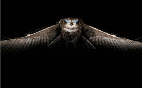
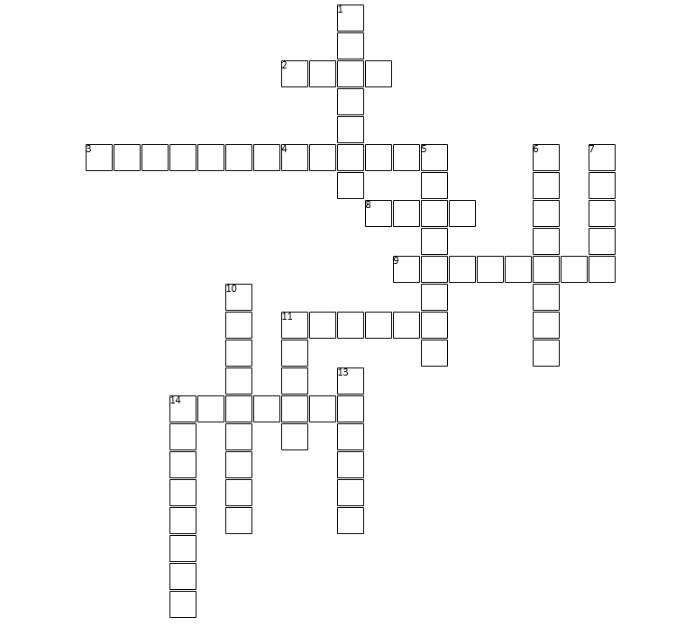
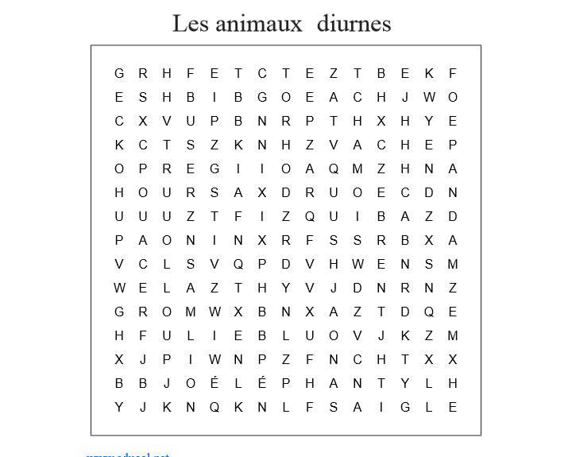

C'est le nom savant du pistage animalier, pas besoin de le retenir mais c'est bien de l'avoir vu au moins une fois.Les animaux ne vivent pas toujours sous le même arbre, comme un gland. Il se déplace, il faut être capable de détecter leur présence si on veut espérer un jour s'en approcher. Pourquoi faire ? Pour les observer déjà, les photographier si on veut, les étudier si on a besoin et bien sûr les manger si c'est pour ça qu'on est là.
Chaque animal vit dans un biotope particulier. C'est-quoi-donc un biotope ? La forêt, le désert, la montagne, la plaine, la mer, la jungle, la neige, sont des biotopes. On part toujours du général vers le particulier. Exemple : une biche, la dame du cerf. Son biotope est bien sûr une nature généreuse et fournie de végétation. Mais pourtant elle évolue sur deux biotopes. La forêt la nuit et la plaine en journée. Si on ne sait pas, qu'on cherche en forêt le jour et qu'on va dormir en plaine la nuit (en tente scoute par exemple), on ne verra jamais l'animal ! On arrive à un deuxième critère, l'activité de l'animal. Est-ce la nuit, le jour, le matin, le soir ? Ils sont tous différents. Il faut connaître les us et coutumes de l'animal pour savoir quels sont les temps forts de sa vie. Si on cherche un ours en hiver, pas de bol il dort. Quand se reproduit-il, quand est-il discret, quand accouche-t-il... ? Enfin il faut savoir quoi chercher, on appelle ça les indices, les empreintes sont un type d'indice par exemple.
JEU N°1 : avant de lire la page suivante, note sur ta feuille (sans relire plus haut) les biotopes que tu as retenus pour voir combien tu en as mémorisé. Sais-tu comment on appelle un animal qui vit le jour, et qui vit la nuit ? Fais une petite liste, pour toi-même, des indices ou signes qu'il faut chercher pour pister un animal ?!
Chez nous en Gaule, le biotope principal c'est la forêt, on a aussi beaucoup de plaines, devenues des champs. Dans certaines régions, dont tu viens peut-être, on trouve le milieu montagnard qui est régit selon son altitude. A chaque hauteur son type d'animaux, il y a donc des sous-biotopes, comme dans une forêt on trouvera la clairière, la mare, le fossé, le sous-bois, le sentier... Pour le pistage, on s'intéresse surtout aux mammifères !
Nous ne sommes pas à l'école donc on ne va pas refaire le cours sur l'écosystème et les biotopes. Sache juste qu'ils existent et qu'ils conditionnent totalement la vie de l'animal. L'humain, de par ses capacités intellectuelles, son pouce opposable et son envie de mettre son grain de sel partout, est l'un des seuls animaux qui va se balader en dehors de sa zone de vie privilégiée (une forêt type Europe en gros). Les autres animaux restent dans la zone où ils sont forts (déplacement, cache, rang dans la chaîne alimentaire), sauf... les migrateurs bien entendu qui ont une zone d'été et une zone d'hiver pour garantir le maintien des conditions météorologiques.
En montagne, par exemple, chaque animal vit à un étage particulier, parce qu'il y trouve à manger, de quoi s'abriter, l'air dont il a besoin. On voit sur le dessins du bas, que la végétation fait pareil !
On apprend en maternix qu'il y a les animaux de jour, et de nuit. Ah, si c'était aussi facile ! En fait beaucoup sortent un peu le matin, un peu le jour, un peu le soir, un peu la nuit. Il est vrai que ceux qui sortent en pleine nuit, se voient rarement en plein jour.
Les animaux ne sont pas psycho-rigides mais opportunistes. S'il y à manger ou qu'ils s'amusent, ils déborderont un peu. Par contre leur comportement dirigera leur opportunisme. C'est-à-dire qu'un animal qui voit mal, pour vivre loin des prédateurs, sortira plutôt la nuit pour ne pas les avantager. Un animal qui voit bien dans le noir, vivra dans le noir car ses proies ne le verront pas arriver mais lui saura les trouver. Souvent c'est la vue et l'ouïe qui déterminent le comportement diurne ou nocturne. Tu retiens ?
De façon générale, essaye de voir les animaux selon l'angle de vue de leur proie et prédateur pour mieux les comprendre. Tu vois une chouette (qui n'est pas la femme du hibou !), tu te dis que c'est une grosse poule ? Et bien sache, jeune apprenti-pisteur, qu'une chouette dans le règne animal, c'est un tueur en série, c'est le croque-mitaine, c'est la vengeance venue du ciel. Elle voit de jour, de nuit, de près, de loin, elle entend tout, elle a des serres affûtées comme les lames de Wolverine, elle tombe à 100 km/h sur ses proies qui elles bougent 4x moins vite donc impossible à esquiver, son vol de capture est en courbe et est le plus silencieux du règne animal. Tu vois une grosse poule, la forêt tout entière y voir un dragon. Mais elle est bonne joueuse, elle hulule en se réveillant, pour indiquer que « la chasse est ouverte ». Oseras-tu te tenir devant elle et crier KEMS ?!
Voici un mot-croisé sur les animaux nocturnes. Sauras-tu... tous les attraper! Pokéball, goooo!
La suite, tu t'en doutais, avec les animaux diurnes (vivant le jour). Il y en a 13 à trouver !
Dans le pistage, si on le prend comme un jeu, on a un « loup » qui cherche et des joueurs qui doivent « se cacher ». A une différence près, dans la vraie vie quand on te trouve, on te bouffe. C'est pourquoi les animaux se planquent vraiment bien. Nous allons voir ensemble quelques habitudes qui te permettront de prendre des notes dans ton calepin de pisteur, afin d'en apprendre plus sur chaque animal. Qui sait, peut-être un jour grâce à cela tu en verras un débouler devant toi. Il faut tout savoir d'eux (où ils vivent, où ils mangent, où ils dorment...).
Tu peux les noter et même les dessiner si cela t'inspire, faire des schémas commentés aide à mieux retenir ! Ressors ta feuille du début où tu as noté tes indices à toi, et compare-les avec ceux-là.
Ce n'est pas un vrai chemin mais plutôt un passage discret, utilisé régulièrement car on peut voir à l’œil nu que la végétation est piétinée ou carrément absente. On voit plein d'empreintes dedans.
Ceux qui ont des cornes, doivent gratter la mousse dessus quand c'est tout neuf. Rien de mieux qu'un arbre pour frotter. Cela laisse des traces très visibles sur l'écorce.
La nuit, les ongulés traînent autour des arbres pour diversifier un peu leur alimentation. Les tiges sont alors grignotées, arrachées, mâchouillées. Avec la fraîcheur de la cassure on peut même estimer la date de passage de l'animal.
C'est la partie cuisine de l'atelier ! Plus sérieusement, chaque animal fait son popo différemment d'un autre (et leur nom varie pour chacun). Les bons pisteurs savent dire qui était là avec une crotte.
Pommes de pins grignotées,graines et coquilles de fruits dévorés, cadavres d'herbivores, sont autant de signes indiquant la présence dans les parages de telle espèce, selon qui mange qui.
Chaque espèce creuse sa maison différemment. La forme, la taille et l'emplacement indiquent forcément le propriétaire. Certains font des trous horizontaux, d'autres verticaux. Le blaireau fait des petits terriers autour, pour servir de toilettes, bon indice
Bien sûr tu l'attendais avec impatience, les empreintes sont le signe privilégié du pistage animalier. Il ne faut jamais négliger les six autres (il y en a une dizaine en réalité) car ils nous aident si on perd l'animal. Quand on le suit on dit qu'on est sur sa PISTE. Quand on observe ses empreintes, 4 par 4 (s'il a 4 pattes) on dit que c'est la VOIE de l'animal. La distance entre deux empreintes de la même patte, c'est le PAS. L'espacement entre les pattes avant et arrière nous donne l'ALLURE (vitesse de déplacement). Va vite voir le quizz sur les empreintes pour essayer de t'y retrouver, un poster de classification est également de la partie si tu galères un peu !
Tu peux télécharger ci-dessous le quizz ainsi que le poster pour t'aider!
Le quizz sur les empreintes des animaux Poster pour déterminer les empreintes